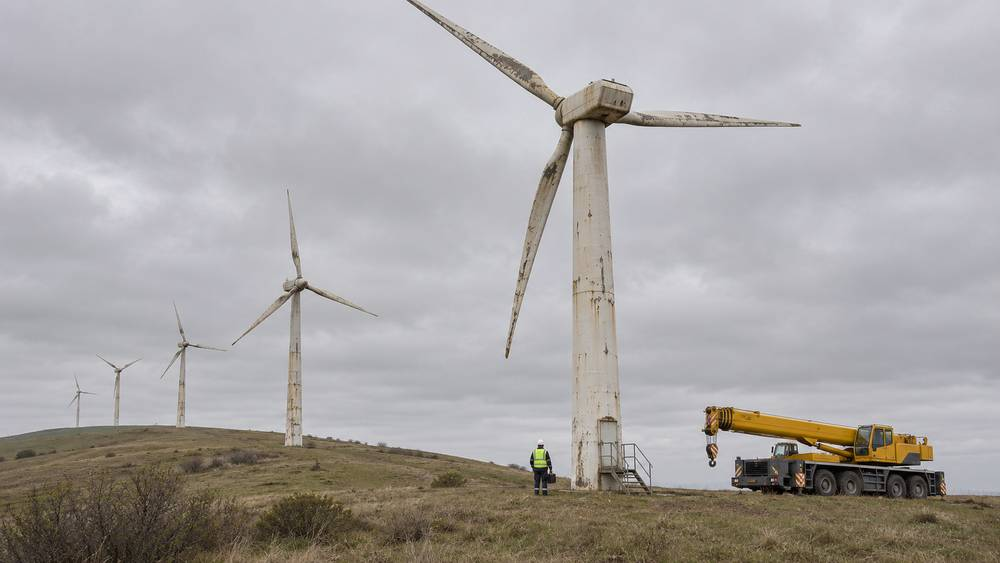

노후 발전설비 안전성평가 법안, 위험등급이면 철거

김태선 의원 등 11명이 낸 전기안전관리법·전기사업법 개정안 2건으로, 평가를 안 받으면 300만 원 이하 벌금이다. 입법예고는 11월 22일까지다.
김태선 의원 등 11명이 11월 12일 노후 발전설비에 정기 안전성평가를 받게 하고 결과에 따라 사용정지나 철거까지 명할 수 있게 하는 「전기안전관리법」·「전기사업법」 개정안 2건을 대표발의했다. 두 법안은 13일 국회 기후에너지환경노동위원회에 회부됐고, 국회 입법예고는 22일까지다. 발의자들은 오래 운영된 풍력발전기 등에서 화재·붕괴 사고가 이어지는데도 노후 설비를 따로 평가하는 제도가 없다는 점을 제안 이유로 들었다.
전기안전관리법 개정안은 기후에너지환경부령으로 정하는 전기설비를 운영하는 발전사업자가 정기적으로 장관의 안전성평가를 받도록 했다. 평가를 받으려면 자본금·기술인력·장비 요건을 갖춰 등록한 전문 업체에서 정밀안전진단을 받고 결과서를 내야 한다. 장관은 평가 결과로 설비의 안전등급을 정해 알리고, 필요하면 수리·개조나 사용정지·사용제한을 명할 수 있다. 평가를 받지 않거나 이 명령을 어기면 300만 원 이하 벌금이고, 진단 결과서를 거짓으로 꾸민 사람과 이를 알고도 낸 발전사업자는 1년 이하 징역 또는 1,000만 원 이하 벌금이다.
전기사업법 개정안은 안전성평가를 받지 않거나 명령을 정당한 사유 없이 어긴 경우, 「산업안전보건법」상 중대재해로 고용노동부 장관이 영업정지를 요청한 경우를 사업허가 취소·정지 사유에 더했다. 현행 제12조는 이런 사유가 있으면 허가를 취소하거나 6개월 이내 사업정지를 명하고, 정지가 전기사용자에게 심한 불편을 주면 5,000만 원 이하 과징금으로 갈음하게 돼 있다. 허가가 취소됐거나 대통령령으로 정하는 위험등급을 받은 설비에는 전기위원회 심의(시·도지사 허가 사업은 심의 없음)를 거쳐 철거와 원상복구를 명할 수 있다. 사업자가 따르지 않으면 「행정대집행법」에 따라 대신 철거하고 그 비용을 사업자에게서 거둔다. 철거 명령을 어기면 300만 원 이하 벌금이다.
두 법안은 공포 후 1년이 지난 날부터 시행되고, 시행 당시 평가 대상인 발전사업자는 시행 뒤 1년 안에 첫 안전성평가를 받아야 한다. 전기사업법 개정안은 전기안전관리법 개정안 의결을 전제로 하며, 의견은 11월 22일까지 국회입법예고 누리집에서 낼 수 있다.
시민에너지 관점
노후 설비 관리는 마을 협동조합과 햇빛소득마을이 운영하는 작은 발전소도 피해 갈 수 없는 일이다. 평가 대상 설비의 범위와 진단 시기·항목은 기후에너지환경부령으로 정해지는 만큼, 소규모 시민 발전소에 과도한 비용이 돌아가지 않게 규모별 기준을 나눠야 한다. 안전은 발전소 옆에 사는 주민이 가장 먼저 겪는 문제이고, 주민이 함께 소유한 발전소일수록 점검 결과를 숨길 이유도 적다. 입법예고 기간에 협동조합과 지역 주민들이 직접 의견을 내길 바란다.
출처: 국회(김태선 의원 대표발의) 2026-11-12 「전기안전관리법 일부개정법률안」(의안번호 2222735) 의안 원문 원문 보기
출처: 국회(김태선 의원 대표발의) 2026-11-12 「전기사업법 일부개정법률안」(의안번호 2222736) 의안 원문 원문 보기
출처: 국회입법예고 2026-11-13 전기사업법 일부개정법률안 입법예고(2026-11-13~11-22, 기후에너지환경노동위원회) 원문 보기